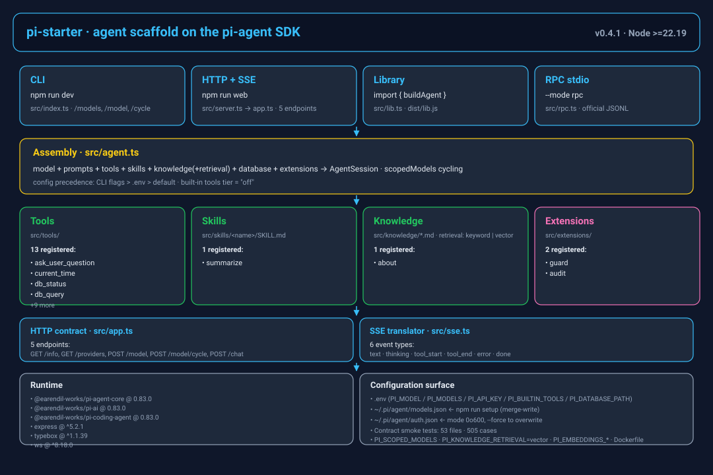
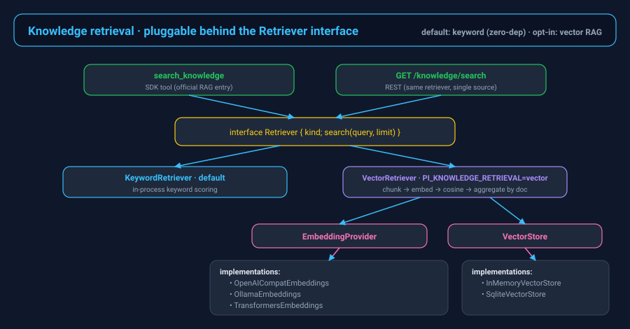

A runnable skeleton, not a demo
Wraps the SDK's createAgentSession into a single buildAgent(), then layers HTTP+SSE, WebSocket, an in-process CLI, and the official RPC stdio JSONL transport on the same core.
Agent scaffold · built on the pi-agent SDK
Clone it and it runs. Add tools, extensions, skills, knowledge, or a new persona — and it becomes a vertical agent.
Repo: github.com/LPK3215/pi-starter · Upstream SDK: earendil-works/pi · Mirrored on CNB, where the gates run · Shareable one-page image: project card
Positioning, value, and how it differs
Wraps the SDK's createAgentSession into a single buildAgent(), then layers HTTP+SSE, WebSocket, an in-process CLI, and the official RPC stdio JSONL transport on the same core.
Business logic enters through injection params (extraTools, extraSkillPaths, extraKnowledgeDirs, extraExtensions). User-level ~/.pi scanning stays off so nothing leaks into a deployed agent.
Three built-in-tool tiers (off / readonly / coding), fail-closed path guard, read-only SQL, and an approval gate whose deny rules cannot be overridden and whose timeout closes the turn.
buildAgent(); WebSocket keeps up to 8 open conversations per client and evicts the least recently used. There is no authentication by default, so the server binds 127.0.0.1 and warns at startup when the bind address is widened. Multi-user and public exposure are out of scope (see Security).Generated from source — scripts/visualization/generate_architecture.mjs

CLI, HTTP+SSE, WebSocket, library, official RPC stdio — one assembly core behind all of them.
SessionHub → ClientSession → Conversation → SnapshotEmitter → ws: state is a snapshot with a rev chain, delivered through per-connection queues.
model + prompts + tools + skills + knowledge(+retrieval) + memory + database + extensions → AgentSession, with scopedModels cycling.
Self-contained, click-to-explore pages generated by the archify skill — pan / zoom / search / focus / guided views. They complement the CI-checked static docs/*.svg above, which stay the gated source of truth (npm run docs:svg:check).
The SDK ships no RAG — it prescribes "register your own searchable tool". Generated by generate_retrieval.mjs.

search_knowledge (SDK tool) and GET /knowledge/search share the same Retriever — no second implementation to drift.
KeywordRetriever is zero-dependency by default. PI_KNOWLEDGE_RETRIEVAL=vector switches to VectorRetriever (chunk → embed → cosine → aggregate by doc), with pluggable EmbeddingProvider + VectorStore.
src/memory/store.ts keeps cross-session facts behind remember / recall tools and GET|POST|DELETE /memory, written atomically with owner-only file modes; PI_MEMORY=off turns it (and its routes) off.Generated by generate_request_flow.mjs

Every version below is read from package.json / web/package.json at generation time
| Layer | Choice | Version |
|---|---|---|
| Runtime | Node.js (built-in node:sqlite, built-in test runner) | >=22.19 |
| Language | TypeScript, strict ESM | ^5.6.0 |
| Agent SDK | @earendil-works/pi-agent-core · pi-ai · pi-coding-agent | 0.83.0 (pinned) |
| HTTP | Express | ^5.2.1 |
| Schema | TypeBox | ^1.1.39 |
| WebSocket | ws | ^8.18.0 |
| Embeddings (optional) | @huggingface/transformers | ^4.3.1 |
Frontend (in web/) | React + Vite + assistant-ui + Tailwind | react ^19.2.8 · vite ^8.3.0 · assistant-ui ^0.15.25 |
| Tests | tsx --test — offline contract tests, no real model call | 53 files · 505 cases (+19 frontend) |
Everything wired into the core
SKILL.md)remember / recall)/name)/logs queryPATCH /settings)Directory list is checked against the filesystem by npm run docs:overview:check
deny rule cannot be disabled, and a timeout or dispose resolves to denyPI_MEMORY=off disables itadditionalPromptTemplatePathsadditionalSkillPathsrev orderingagent.ts · app.ts · capabilities.ts · child-env.ts · cli-args.ts · client-session.ts · config.ts · errors.ts · extension-ui-bridge.ts · graceful.ts · index.ts · lib.ts · log-sink-file.ts · log.ts · metrics.ts · models.ts · prompt-images.ts · protocol.ts · provider-keys.ts · rpc.ts · sdk-adapter.ts · secret-files.ts · server.ts · session-hub.ts · settings.ts · setup.ts · snapshot.ts · sse.ts · test-server.ts (test helper, not in dist) · test-tmp.ts (test helper, not in dist).nojekyll · architecture.svg · assistant-ui.md · engineering-review.md · index.html · knowledge-retrieval.svg · sse-protocol.svg · 使用指南.md · 前端调研.md · 参考手册.md · 官方SDK接口文档.md · 嵌入指南.md · 智能体视角评估.md · 能力与边界.md · 项目分析报告.md · archify/ · project_overview/coverage-thresholds.mjs · coverage.mjs · dist-assets.cjs · e2e-restart.mjs · npm-invocation.mjs · probe-providers.mjs · publish-local.mjs · rag-smoke.mjs · release.mjs · smoke-ws.mjs · verify-audit.mjs · verify-embed.mjs · verify.mjs · visualization/package.json (Vite + React + assistant-ui). src/pi/client.ts is the WebSocket client over the snapshot protocol and src/pi/usePiRuntime.ts the ExternalStore adapter; both share src/protocol.ts types with the backend. Built to web/dist and served at / by createApp()..cnb.yml · .dockerignore · .env.example · .gitattributes · .gitignore · AUTHORS · CHANGELOG.md · CODE_OF_CONDUCT.md · CONTRIBUTING.md · Dockerfile · FAQ.md · LICENSE · README.md · README.zh-CN.md · SECURITY.md · diagram-input.md · package.json · pipeline.config.json · tsconfig.build.json · tsconfig.json · hooks/ — tracked files only (git ls-files), so local scratch directories never reach the page.Pick a mode
npm install
cp .env.example .env # fill PI_API_KEY / PI_MODEL
npm run setup # merge credentials into ~/.pi/agent/
npm run dev # interactive chat; /models /model /cyclenpm run web # serves the built frontend + API on 127.0.0.1:3000
curl http://localhost:3000/health/ready
curl http://localhost:3000/capabilities
curl "http://localhost:3000/knowledge/search?q=model"npm run dev -- --mode rpc # official SDK runRpcMode over stdio JSONL
# headless; shares the same resourceLoaderOptions as buildAgent()npm run build # → dist/ (test helpers are excluded)import { buildAgent, createApp } from "pi-starter";
const agent = await buildAgent({
builtinTools: "off",
extraTools: [myTool],
extraKnowledgeDirs: ["/path/to/docs"],
knowledgeRetrieval: "vector", // opt-in RAG
});
const { app, dispose } = createApp({ agent, staticDir: false });docker build -t pi-starter .
docker run --rm -p 127.0.0.1:3000:3000 \
-v "$HOME/.pi/agent:/home/pi/.pi/agent:ro" pi-starter
# publish to loopback only — the service has no auth47 route handlers, grouped by what they are for. This table is generated from the route registrations themselves — a route that matches no group fails the build, so it cannot go stale.
| Method · path | Purpose |
|---|---|
| Health & introspection | |
| GET /health | Liveness: reports the running mode and the bound model. |
| GET /health/ready | Readiness: each dependency is checked separately and reported as it is, so a stale claim cannot pass as ready. |
| GET /metrics | Cumulative counters and gauges (turns, tokens, pending approvals); ?format=prometheus for the exposition format. |
| GET /info | Capability snapshot of the live session: model, tools, skills, knowledge, limits. |
| Chat, models & context | |
| POST /chat | Stream one prompt: SSE by default, ?format=jsonl for the raw event stream. |
| POST /model | Switch the model on the shared session. |
| POST /model/cycle | Rotate to the next model in scopedModels. |
| GET /providers | Configured providers with their checkAuth result. |
| POST /context/compact | Compact the context now; auto-compaction runs on its own budget. |
| Resources: skills, knowledge, templates | |
| GET /skills | Registered skills (name + description). |
| GET /skills/:name | One skill's full SKILL.md. |
| GET /knowledge | Knowledge documents in scope. |
| GET /knowledge/:name | One document, verbatim. |
| GET /knowledge/search | Search through the same Retriever the search_knowledge tool uses — there is no second implementation to drift. |
| GET /prompt-templates | Templates available as /name. |
| GET /prompt-templates/:name | One template body. |
| Database (read-only) | |
| GET /db | Tables and row counts. |
| GET /db/notes | Rows of the seeded notes table. |
| GET /db/notes/:id | One row by id. |
| POST /db/query | Run SQL. SELECT only — writes are rejected before the statement reaches sqlite. |
Cross-session memory — Mounted only when memory is on (PI_MEMORY=off removes these routes). | |
| GET POST /memory | List the stored facts, or write one. |
| DELETE /memory/:id | Delete one fact by id. |
Workspace files — Mounted only when a FileService is wired; every path goes through the fail-closed guard and is audited. | |
| GET /files/list | Directory listing. |
| GET /files/read | File as text (binary extensions are refused). |
| GET /files/raw | File as bytes, for download. |
| POST /files/write | Replace a file's contents; creates parent directories, enforces a size cap. |
| POST /files/create | Create a file — conflicts if it already exists. |
| POST /files/rename | Rename / move inside the workspace; target must not exist. |
| POST /files/copy | Copy inside the workspace. |
| POST /files/delete | Delete a file, or a subtree when recursive is set. |
| POST /files/upload | Upload a file into the workspace. |
| Approval rules — Mounted only when a rules store is wired. | |
| GET POST PUT /approval/rules | List the effective rules (user first, built-in flagged), replace the whole user set, or add one. Built-in rules are read-only and every rule is re-validated on the way in — the same validator that guards the on-disk file. |
| DELETE /approval/rules/:id | Delete one user rule. |
| Provider keys — Mounted only when a key store is wired; stored secrets are never echoed back. | |
| GET POST /provider-keys | List providers with their key names and which is active, or store a key. The first key becomes active and is applied to the live session. |
| POST /provider-keys/activate | Activate a stored key through the same path as a model switch, so no conversation keeps using the old one. |
| POST /provider-keys/remove | Remove a stored key. |
| Runtime settings, tools & sessions — Mounted only when the tool registry / settings service is wired. | |
| GET PATCH /settings | Read, or merge a partial update into the runtime settings (persisted; unknown fields are rejected). |
| POST /tools/:name/enabled | Enable or disable a tool for the running session. |
| GET /capabilities | The capability matrix — the same object the WebSocket capabilities frame sends. |
| POST /sessions/import | Import an existing session file and resume from it. |
| Structured logs — Mounted only when a log directory is configured. | |
| GET /logs | Query entries by level, module, request id or keyword, with cursor paging over the daily files. |
| GET /logs/stats | Counts per level and module for the same selection. |
GET /ws?session= — one connection, many conversations. Client commands and server frames (including approval round-trips, which have no REST route by design) are enumerated in docs/参考手册.md.Offline contract tests, never call a real model
backend cases in 53 files · 19 frontend cases
runtime WebSocket smoke checks against a real server
e2e assertions in scripts/e2e-restart.mjs: real process restart and session resume, no API key
npm run verify:
typecheck · lint:unused · test · test:web · docs:check · verify:audit · smoke · build · verify:embed
.
npm run verify:all adds the real-process e2e. Coverage is a ratchet (CI only): lines ≥ 92 / branches ≥ 81 / functions ≥ 85 over src/**.
Route handlers, approval decisions and the SSE translator run against an in-process SDK session double — never a stubbed answer to the question under test. The smoke and e2e layers spawn the real server.
The README metric tables, docs/参考手册.md, the three SVGs and this page are generated and re-checked in CI (npm run docs:check).
Windows skips POSIX-only permission and symlink cases with a printed reason instead of passing them silently; a skip is reported, never counted as green.
Every docs/*.md on disk is listed here — the generator fails if one is missing
README.md — main guide (English)README.zh-CN.md — Chinese edition, mirrored section by sectiondocs/使用指南.md — how to run the three shapes, send a first message, add business logic, diagnose failures (Chinese)docs/参考手册.md — generated reference: every REST route, WS command and frame, tool, environment variable, npm script and module (Chinese)docs/嵌入指南.md — embedding buildAgent() / createApp() into an existing Express service (Chinese)docs/能力与边界.md — capability matrix and boundaries against the SDK: what is wired, what is deliberately absent (Chinese)docs/智能体视角评估.md — the scaffold evaluated from an agent's point of view, with evidence per claim (Chinese)docs/官方SDK接口文档.md — the upstream pi SDK surface this scaffold builds on (Chinese)docs/assistant-ui.md — assistant-ui surface used by web/ and how it maps to the snapshot protocol (Chinese)docs/前端调研.md — frontend research behind that choice (Chinese)docs/engineering-review.md — engineering walkthrough report (mixed language, historical)docs/项目分析报告.md — archived earlier analysis report, kept for provenanceCHANGELOG.md — release history (Keep a Changelog + SemVer)CONTRIBUTING.md — dev setup, gate list, PR flowSECURITY.md — threat model and deployment cautionsFAQ.md — configuration and behaviour questionsCODE_OF_CONDUCT.md — contributor code of conductdocs/project_overview/ — this page (index.html · style.css · script.js)docs/project_overview/project_card.html — the same numbers as one shareable image: an 800 px card that exports itself to a 2x PNGCopyright (c) 2026 LPK3215. Full text: LICENSE.
LPK3215 <17538703215@163.com> — creator and primary maintainer. See AUTHORS and the contributors graph.
Cite as: LPK3215/pi-starter — an agent scaffold on the @earendil-works/pi-coding-agent SDK, v0.4.2.